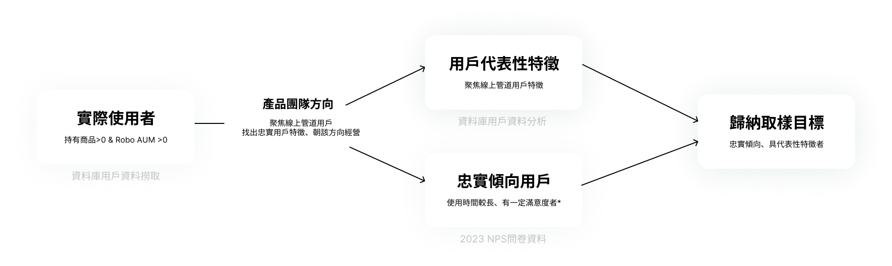
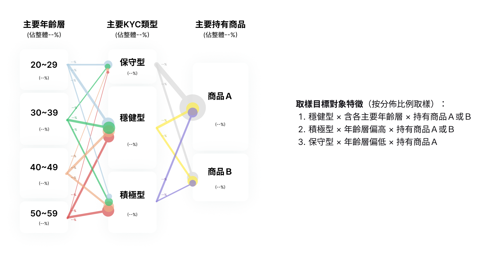
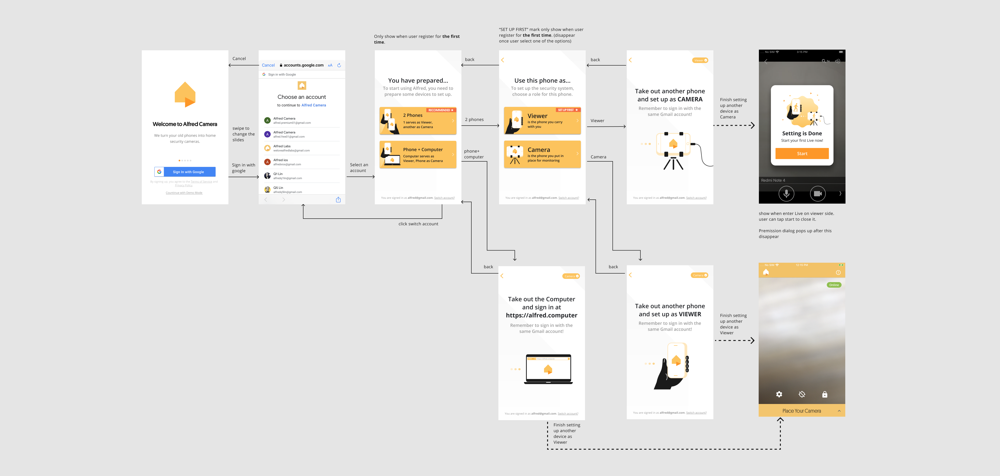

OBJECTIVES
1.Explore the demographics of the product audience to provide references for subsequent product strategy.
• Define representative characteristics of loyal and long-term users, aiming to identify the true audience of the product and attempt expansion.
• Research Question: What characteristics define the users of this product?
2.Test usability issues of the new version design to provide references for design adjustments.
• The new version design adjusts some information presentation methods and adds investment performance history information.
• Research Question: Can users correctly understand the information? Is the operation smooth?
TARGET RESEARCH SUBJECTS
Derived representative characteristics that suited the product's focus on online channel users from actual user data, taking into account factors like gender, age, KYC results, investment holdings, and rebalancing behavior. Employed statistical analysis techniques during the user data analysis to identify relationships between these factors (e.g., the correlation between age and KYC results) to ensure the meaningfulness of the defined sampling characteristics. It was found that age, KYC results, and investment holdings emerged as the most representative factors. Subsequently, 9 participants were recruited from survey respondents who met specific criteria: they had used the product for a certain duration, expressed high satisfaction levels, and possessed the identified representative traits.
USER RESEARCH
Usability Test & Interview. (Time: 1 hour)
We made a questionnaire to pick out the participants that meets our requirements. 5 participants are needed.
• Must be around 30~50 years old, which is our main target audience.
• Think need Security Camera in their life. It’d be better they need it but haven’t try any security camera product yet.

RESEARCH RESULTS
After testing our prototype and allowing participants to try our original onboarding process, all participants successfully completed the onboarding with our new prototype. However, most encountered difficulties with the original version. While the new flow appears feasible, there are areas for improvement in our design.
Emphasizing Recommended Options
Prototype testing revealed that prompting participants to select prepared devices for Alfred setup helped clarify requirements. However, some participants hesitated in choosing the option. To address this, we should not only set one of the recommended options as default but also emphasize the recommended option further.
Improving Clarity of Instructions
Although all participants completed the setup process as expected, some expressed uncertainty about the instructions. We believe we should enhance the clarity of instructions, making them as simple and straightforward as possible.
UI/UX Design
In light of the research results indicating the user-friendliness of the new version compared to the original, the final design follows suit with the new iteration. Additionally, in response to the research findings, we have refined the design of the recommended options and adjusted the instructional content accordingly.
